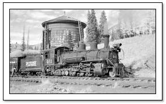

Those Wonderful Locomotives!
The Rio Grande Southern and Denver and Rio Grande Railroads had several locomotives on the rosters. If I had to chose a favorite it would be RGS Locomotive #461. My first purchase was RGS #455 in the "before the wreck" version.

| Number | Type | Builder | Date | Origin and History |
|---|---|---|---|---|
| #74 | 2-8-0 | Brooks | 1898 | Originally Colorado & Northwestern #30. Sent to Morse Brothers of Denver in 1919. To the Colorado $ Southern as their #74 in 1921. Sold to the RGS in 1948 to become their #74. Sold to City of Boulder where it remains on display |
| #461 | 2-8-2 | Baldwin | 1903 | Originally a Vulcan compound with a sloped back tender. Traded to the RGS Ditcher 030. Wrecked 11/1943, rebuilt 1947. Scrapped 1953 |
| #455 | 2-8-2 | Baldwin | 1903 | Originally a Vulcan compound with a slope backed tender. Sold to the RGS 9/30/1950. Dismantled in 1953. |